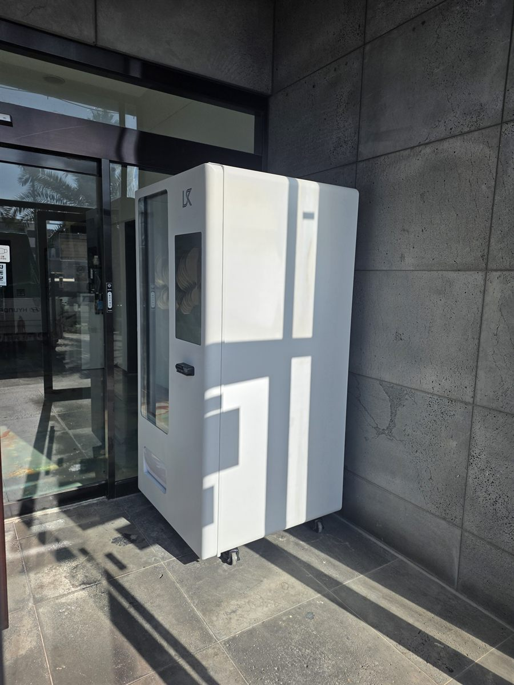

상가 건물에 자판기를 놓을 때 자리는 크게 둘로 갈립니다. 건물 안이냐, 건물 앞이냐입니다. 안쪽 로비는 관리가 편하지만 건물 문이 잠기면 그 시간부터 매출이 0이 됩니다. 반대로 입구 쪽은 손이 조금 더 가는 대신 24시간 내내 팔리는 자리가 됩니다. 이번 현장은 사진처럼 처마가 벽면을 덮어 주는 입구가 있어서 바깥이면서도 비를 거의 맞지 않는, 말하자면 반쯤 실내 같은 공간이 나왔습니다. 이런 자리가 상가 건물에서는 가장 조건이 좋습니다.
자리를 잡으면서 가장 먼저 본 것은 의외로 자동문 센서였습니다. 자동문 위에는 사람이 다가오는 것을 읽는 감지기가 달려 있는데, 기계를 센서 범위 안에 세우면 문이 하루 종일 열렸다 닫혔다 합니다. 겨울에 냉난방이 그대로 새어 나가고 문 모터도 금방 상합니다. 그래서 문틀에서 한 걸음 넉넉히 떨어뜨리고, 설치 뒤에 사람이 없을 때 문이 혼자 열리지 않는지를 몇 분 서서 지켜봤습니다. 두 번째는 통행 폭입니다. 상가 건물 입구는 짐을 들고 드나드는 사람이 있어서, 기계를 세운 뒤에도 성인 두 사람이 비켜 갈 폭은 남겨야 합니다. 벽에 바짝 붙이되 모서리가 동선으로 튀어나오지 않게 각을 맞췄습니다. 세 번째는 수평입니다. 입구 바닥은 비가 고이지 않도록 바깥쪽으로 미세하게 기울여 시공하는 곳이 많습니다. 평평해 보여도 수평계를 올리면 거의 예외 없이 한쪽이 내려가 있어, 다리를 하나씩 돌려 잡았습니다.
송파 상가 건물 입구에 맞는 구성
기계는 냉장 음료를 중심에 둔 자판기 한 대로 시작했습니다. 건물 입구를 지나는 사람은 걸음이 빠릅니다. 고민하지 않고 집는 품목이 아니면 잘 안 팔립니다. 그래서 생수와 탄산, 이온음료, 캔커피를 앞 칸에 몰아 두고 간식은 종류를 줄여 한두 줄만 넣었습니다. 아침에 출근하며 사는 커피와 오후에 사는 음료가 시간대별로 갈리기 때문에, 한 달쯤 팔아 보고 칸 배치를 다시 잡기로 했습니다. 처음부터 품목을 꽉 채워 두는 것보다 이 방식이 낫습니다.
반외부 공간이라 전원과 방수는 평소보다 신경을 더 썼습니다. 콘센트는 바닥에 바짝 붙이지 않고 물이 튀어도 닿지 않는 높이로 잡았고, 누전차단기가 살아 있는지 분전반에서 확인했습니다. 전선이 바닥을 가로지르면 사람이 걸려 넘어지므로 벽선을 따라 정리했습니다. 통신은 건물 와이파이가 입구까지 약하게 와서 기계 쪽에 별도 통신 장치를 두는 방식으로 갔습니다. 결제는 카드와 삼성페이·카카오페이·네이버페이를 받고 현금함은 넣지 않았습니다. 바깥에 가까운 자리일수록 현금은 관리와 안전 양쪽에서 부담이 됩니다. 재고와 매출은 휴대폰에서 바로 확인하고, 품절 칸이 생기면 알림이 오도록 설치 당일에 같이 맞춰 봤습니다.
건물 입구 자판기, 좋은 점과 어려운 점
좋은 점은 분명합니다. 첫째, 영업시간이라는 것이 없습니다. 상가 점포들이 문을 닫은 뒤에도 건물에 드나드는 사람, 근처를 지나는 사람이 있으면 그 시간에도 팔립니다. 둘째, 지나가는 사람에게 그대로 보입니다. 안쪽 로비에 두면 건물에 볼일이 있는 사람만 보지만, 입구는 걸어가던 사람도 봅니다. 셋째, 임대 면적을 쓰지 않습니다. 벽 한 칸이면 되고, 캐스터가 달려 있어 나중에 자리를 옮기기도 쉽습니다. 넷째, 건물 입장에서 편의 시설이 하나 느는 셈이라 입주 점포들에게도 반응이 나쁘지 않습니다.
어려운 점도 솔직히 적겠습니다. 첫째는 날씨입니다. 처마가 있어도 바람이 치는 날에는 비가 들이치고, 한여름 더위와 한겨울 추위를 그대로 받습니다. 처마가 없거나 햇빛이 길게 드는 자리라면 차양이나 위치 변경을 먼저 말씀드립니다. 둘째는 관리 손길입니다. 실내보다 먼지와 흙이 빨리 앉아 겉면과 유리를 자주 닦아 주셔야 보기 좋습니다. 셋째는 관리 주체 확인입니다. 상가 건물은 공용 공간을 쓰는 데 건물주나 관리사무소 동의가 필요한 경우가 많습니다. 상담 때 이것부터 여쭙는 이유입니다. 넷째는 안전입니다. 사람이 상주하지 않는 시간이 있으므로 CCTV 화각 안에 들어오는 자리를 권하고, 넘어지지 않도록 벽 쪽 고정도 함께 봅니다. 다섯째, 겨울철에는 음료가 얼지 않도록 온도 설정을 계절에 맞게 한 번 더 손봐야 합니다.
송파 무인매장, 이런 자리가 잘 됩니다
송파는 서울 동남권에서 주거와 업무, 유통이 한 구 안에 다 들어 있는 지역입니다. 그래서 자판기 자리도 성격이 여러 갈래입니다. 첫째는 문정동 일대의 업무 지구입니다. 법조단지와 가든파이브 주변으로 사무 시설이 모여 있어 출근 시간과 점심시간에 흐름이 뚜렷합니다. 둘째는 잠실 쪽 상업 지역입니다. 잠실역과 석촌호수 주변은 주말과 평일 저녁의 유동이 크게 달라, 대기와 이동이 많은 자리를 고르면 회전이 빠릅니다. 셋째는 가락동 농수산물시장 주변입니다. 새벽부터 사람이 움직이는 상권이라 이른 시간에 열려 있는 판매 수단이 귀한 편입니다.
그 밖에 문의가 꾸준한 자리는 방이동과 오금동의 먹자 상권, 거여동·마천동과 위례 방면의 신축 상가, 장지동 쪽 물류·업무 시설, 올림픽공원과 한성백제 일대를 오가는 동선, 그리고 풍납동·송파동·삼전동의 아파트 단지 상가입니다. 같은 송파라도 대로변이냐 단지 안쪽이냐에 따라 지나는 사람 수가 완전히 다릅니다. 그래서 상담 때는 주소보다 그 자리 앞을 하루에 몇 사람이 지나는지, 밤에는 불이 켜져 있는지를 먼저 여쭙습니다. 강동구 천호·둔촌 방면과 성남 위례·복정 쪽은 한 번 나가는 길에 같이 보는 일이 많습니다.
송파 서비스 지역
송파구 — 잠실동 · 신천동 · 송파동 · 석촌동 · 삼전동 · 가락동 · 문정동 · 장지동 · 방이동 · 오금동 · 거여동 · 마천동 · 풍납동 · 위례동
역 — 잠실역 · 잠실새내역 · 잠실나루역 · 석촌역 · 석촌고분역 · 송파역 · 가락시장역 · 문정역 · 장지역 · 복정역 · 방이역 · 오금역 · 개롱역 · 거여역 · 마천역 · 올림픽공원역 · 몽촌토성역 · 한성백제역 · 송파나루역 · 삼전역
주요 시설 — 문정동 법조단지 · 가든파이브 · 가락동 농수산물시장 · 석촌호수 · 올림픽공원 · 방이동 상권 · 위례신도시 방면
인접 — 강동구(천호 · 둔촌) · 강남구(수서 · 일원) · 광진구 · 하남시 · 경기 성남(위례 · 복정) 방면
서울 전역(강남 4구 · 도심권 · 서북권 · 서남권 · 동북권)과 경기 성남 · 하남 · 광주까지 같은 조건으로 나갑니다.
송파 무인창업, 이렇게 시작하시면 됩니다
설치비는 받지 않습니다. 자리 확인부터 품목 구성, 기계 반입, 카드 결제 연동, 재고 채우는 방법까지 한 번에 안내해 드립니다. 건물 입구처럼 공용 공간을 쓰는 자리는 기계보다 동의를 받는 일이 먼저인 경우가 많으니, 관리사무소가 있는 건물이면 미리 말씀을 넣어 두시는 편이 빠릅니다. 견적 전에 확인하는 것은 전기 위치·벽면 폭·비를 가려 주는 구조 세 가지입니다. 입구에 턱이나 계단이 있으면 반입 경로도 함께 봅니다. 자리 사진 한 장과 대략의 벽면 폭만 보내 주셔도 들어갈지 아닐지는 미리 봐 드립니다.
비용은 구입이 렌탈보다 유리한 편입니다. 렌탈료를 몇 년 내는 것보다 처음에 사 두는 쪽이 총액이 낮게 나오는 경우가 많고, 오래 쓸수록 차이가 벌어집니다. 다만 임차 기간이 짧거나 자리를 옮길 가능성이 있는 경우라면 렌탈을 함께 비교해 보시는 편이 낫습니다. 구성별 36개월 총비용은 구입 vs 렌탈 비교 가이드에 정리해 두었습니다.
관련 검색어: 송파무인자판기 · 송파무인자판기설치 · 송파자판기 · 문정동자판기 · 잠실자판기
송파 무인자판기 설치 상담
세워 둘 자리 사진 한 장만 보내 주셔도 됩니다. 남는 벽과 전기 위치, 비를 가려 주는 구조와 반입 경로를 보고 들어갈 수 있는 크기와 대수를 먼저 봐 드린 뒤 견적을 보내 드립니다.
※ 사진은 픽포스가 시공한 설치 사례이며, 글에 적힌 지역의 현장 사진은 아닙니다. 자판기 구성과 품목은 자리와 업종에 따라 달라지며, 건물 공용 공간 설치는 관리 주체 동의와 전기 위치, 통행 폭 확보 조건을 현장에서 먼저 확인합니다. 정확한 금액은 견적서로 안내드립니다.